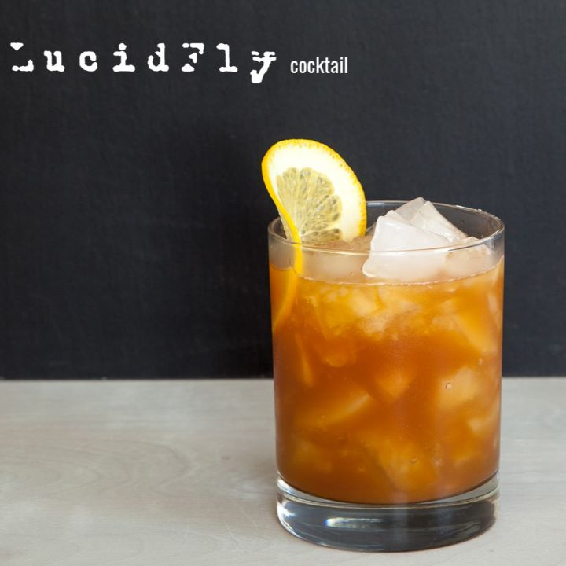

LUCID FLY: Um enganoso drink de cerveja amanteigada.
Quando eu e a Alice começamos a trabalhar juntos e ela me disse que o colega de escritório dela, Doug, tinha uma banda e que eles eram bons, eu sabia que eles seriam bons. Essa foi minha introdução ao Lucid Fly e (tambores) eles finalmente estão lançando seu primeiro álbum de estúdio! Doug pediu se poderíamos criar um coquetel para o álbum deles, e quem sou eu para dizer não? Apresentando o coquetel Lucid Fly!
Ingredientes
- 30 ml de bourbon
- 30 ml de Cherry Herring
- 60 ml de Tang
- 1/4 colher de chá de absinto
- Uma pitada de Cherry Bitters
- Rodelas de laranja
Coloque todos os ingredientes no copo Old Fashioned. Adicione cubos de gelo e mexa bem. Decore com rodelas de laranja e sirva.
